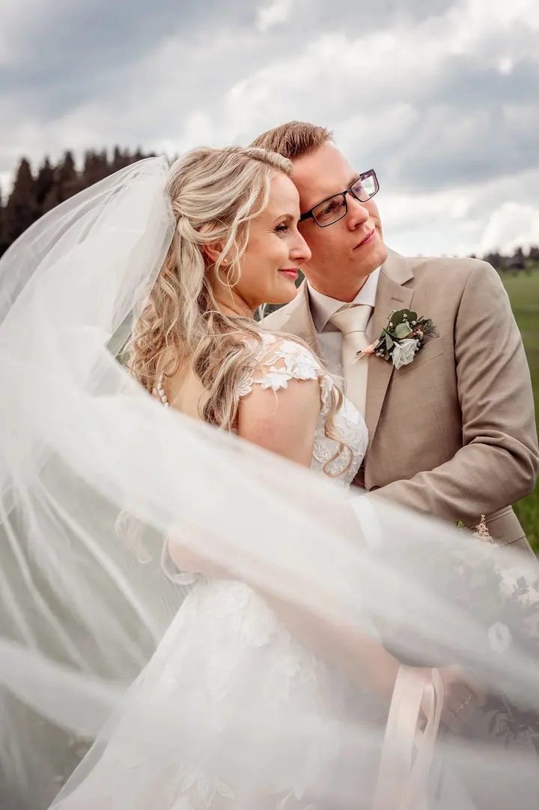

jedna
Svatební focení
Celý svatební příběh od ranních příprav přes obřad až po noční zábavu. Fotky dostanete na USB, k vybraným balíčkům i vytištěné ve svatební krabičce, a k tomu online galerii, kterou můžete poslat rodině a známým.

Svatební a těhotenská fotografka · Blansko, Brno a jižní Morava, Levice

Jmenuji se Viktória Štrbová, ale klidně mi říkejte Viki. Fotím svatby, těhotenská focení i rodiny s dětmi, hlavně na Moravě a v rodných Levicích na Slovensku.
Více o mně
Co fotím
jedna
Celý svatební příběh od ranních příprav přes obřad až po noční zábavu. Fotky dostanete na USB, k vybraným balíčkům i vytištěné ve svatební krabičce, a k tomu online galerii, kterou můžete poslat rodině a známým.
dvě
Doporučuji ho na přelomu 7. a 8. měsíce, kdy je bříško nejkrásnější a vy se ještě cítíte pohodlně. Když nemáte co na sebe, mám k dispozici několik těhotenských šatů.
tři
Focení v ateliéru v Blansku nebo venku, podle toho, co je vám bližší. Ráda zachytím kouzlo dětského úsměvu a to, jak spolu jako rodina fungujete.
Od krátkého mini focení na fotky do životopisu až po dvouhodinové portrétové focení. V ateliéru fotím i boudoir a akty.
Fotky, které vás budou těšit ještě roky.


Za objektivem
Ahoj, já jsem Viki. Focení je moje vášeň a věnuji se mu profesionálně. Jak se to občas stane, vítr mě zavál za hranice, a tak dnes žiji v Blansku. Fotím hlavně na Moravě a v rodných Levicích na Slovensku, ale za focením ráda přijedu kamkoliv.
Proč fotím? Protože svou práci miluji. Ráda pro vás zachytím lásku, emoce a kouzlo dětského úsměvu, tedy to, co vás bude na fotkách těšit ještě roky. Záleží mi na tom, aby bylo focení uvolněné a abyste se se mnou cítili dobře, ať už se potkáme v ateliéru, venku nebo na vaší svatbě.
Jako fotografka mám svůj styl, ale když mi řeknete svou představu, ráda se k ní přikloním. A když žádnou nemáte, nevadí, spolu vždycky něco vymyslíme. Miluji cestování, netradiční nápady, veselé lidi a nové zážitky. Bude mi potěšením fotit i vás.
Viktória
Napište mi nebo zavolejte. S termínem platí, že čím dřív, tím líp, budete mít širší výběr. Občas se ale najde místo i na poslední chvíli.
Pokud máte nějakou představu, sem s ní. Pokud ne, nevadí, něco vymyslíme spolu před focením nebo přímo na místě.
Poradím vám s oblečením. Nejlépe funguje barevně sladěné, bez nápisů a výrazných vzorů. Dámám doporučuji přijít nalíčené a s upravenými vlasy.
Fotíme v pohodě a bez stresu. Fotky dostanete přes webovou galerii, ze svatby navíc na USB a k vybraným balíčkům i vytištěné ve svatební krabičce.
Portfolio
Fotografie jsou ilustrační
Otázky
Doporučuji přelom 7. a 8. měsíce, nejpozději během 8. měsíce. Bříško je tehdy krásně vidět a vy se ještě cítíte pohodlně. Fotit se dá ale i v jiném období.
Barevně sladěné oblečení bez nápisů a bez výrazných vzorů. Na těhotenské focení si přineste něco přiléhavého, v čem vynikne bříško. Několik těhotenských šatů mám také k dispozici.
Svatební balíčky začínají na 6 300 Kč za 3 hodiny focení a končí na 22 500 Kč za 15 hodin. Podle délky dostanete 150 až 800 fotek na USB a k vybraným balíčkům i vytištěné fotky.
Ano. Pro páry, které mají u mě zarezervovaný termín svatby, je hodinové předsvatební focení zvýhodněné za 1 200 Kč a dostanete všechny nafocené záběry.
Do 25 km od Blanska jezdím zdarma. Za každý další kilometr účtuji 5 Kč. Po dohodě fotím po celé ČR i SR.